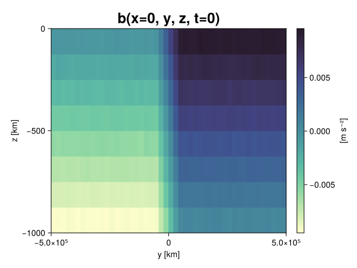
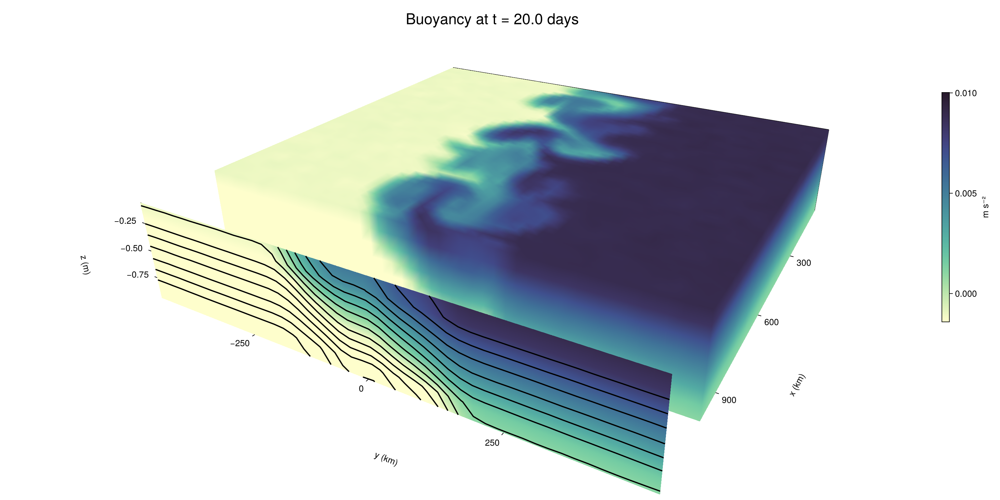

Baroclinic adjustment
In this example, we simulate the evolution and equilibration of a baroclinically unstable front.
Install dependencies
First let's make sure we have all required packages installed.
using Pkg
pkg"add Oceananigans, CairoMakie"using Oceananigans
using Oceananigans.UnitsGrid
We use a three-dimensional channel that is periodic in the x direction:
Lx = 1000kilometers # east-west extent [m]
Ly = 1000kilometers # north-south extent [m]
Lz = 1kilometers # depth [m]
grid = RectilinearGrid(size = (48, 48, 8),
x = (0, Lx),
y = (-Ly/2, Ly/2),
z = (-Lz, 0),
topology = (Periodic, Bounded, Bounded))48×48×8 RectilinearGrid{Float64, Periodic, Bounded, Bounded} on CPU with 3×3×3 halo
├── Periodic x ∈ [0.0, 1.0e6) regularly spaced with Δx=20833.3
├── Bounded y ∈ [-500000.0, 500000.0] regularly spaced with Δy=20833.3
└── Bounded z ∈ [-1000.0, 0.0] regularly spaced with Δz=125.0Model
We built a HydrostaticFreeSurfaceModel with an ImplicitFreeSurface solver. Regarding Coriolis, we use a beta-plane centered at 45° South.
model = HydrostaticFreeSurfaceModel(; grid,
coriolis = BetaPlane(latitude = -45),
buoyancy = BuoyancyTracer(),
tracers = :b,
momentum_advection = WENO(),
tracer_advection = WENO())HydrostaticFreeSurfaceModel{CPU, RectilinearGrid}(time = 0 seconds, iteration = 0)
├── grid: 48×48×8 RectilinearGrid{Float64, Periodic, Bounded, Bounded} on CPU with 3×3×3 halo
├── timestepper: QuasiAdamsBashforth2TimeStepper
├── tracers: b
├── closure: Nothing
├── buoyancy: BuoyancyTracer with ĝ = NegativeZDirection()
├── free surface: ImplicitFreeSurface with gravitational acceleration 9.80665 m s⁻²
│ └── solver: FFTImplicitFreeSurfaceSolver
├── advection scheme:
│ ├── momentum: WENO reconstruction order 5
│ └── b: WENO reconstruction order 5
└── coriolis: BetaPlane{Float64}We start our simulation from rest with a baroclinically unstable buoyancy distribution. We use ramp(y, Δy), defined below, to specify a front with width Δy and horizontal buoyancy gradient M². We impose the front on top of a vertical buoyancy gradient N² and a bit of noise.
"""
ramp(y, Δy)
Linear ramp from 0 to 1 between -Δy/2 and +Δy/2.
For example:
```
y < -Δy/2 => ramp = 0
-Δy/2 < y < -Δy/2 => ramp = y / Δy
y > Δy/2 => ramp = 1
```
"""
ramp(y, Δy) = min(max(0, y/Δy + 1/2), 1)
N² = 1e-5 # [s⁻²] buoyancy frequency / stratification
M² = 1e-7 # [s⁻²] horizontal buoyancy gradient
Δy = 100kilometers # width of the region of the front
Δb = Δy * M² # buoyancy jump associated with the front
ϵb = 1e-2 * Δb # noise amplitude
bᵢ(x, y, z) = N² * z + Δb * ramp(y, Δy) + ϵb * randn()
set!(model, b=bᵢ)Let's visualize the initial buoyancy distribution.
using CairoMakie
# Build coordinates with units of kilometers
x, y, z = 1e-3 .* nodes(grid, (Center(), Center(), Center()))
b = model.tracers.b
fig, ax, hm = heatmap(view(b, 1, :, :),
colormap = :deep,
axis = (xlabel = "y [km]",
ylabel = "z [km]",
title = "b(x=0, y, z, t=0)",
titlesize = 24))
Colorbar(fig[1, 2], hm, label = "[m s⁻²]")
fig
Simulation
Now let's build a Simulation.
simulation = Simulation(model, Δt=20minutes, stop_time=20days)Simulation of HydrostaticFreeSurfaceModel{CPU, RectilinearGrid}(time = 0 seconds, iteration = 0)
├── Next time step: 20 minutes
├── Elapsed wall time: 0 seconds
├── Wall time per iteration: NaN days
├── Stop time: 20 days
├── Stop iteration : Inf
├── Wall time limit: Inf
├── Callbacks: OrderedDict with 4 entries:
│ ├── stop_time_exceeded => Callback of stop_time_exceeded on IterationInterval(1)
│ ├── stop_iteration_exceeded => Callback of stop_iteration_exceeded on IterationInterval(1)
│ ├── wall_time_limit_exceeded => Callback of wall_time_limit_exceeded on IterationInterval(1)
│ └── nan_checker => Callback of NaNChecker for u on IterationInterval(100)
├── Output writers: OrderedDict with no entries
└── Diagnostics: OrderedDict with no entriesWe add a TimeStepWizard callback to adapt the simulation's time-step,
conjure_time_step_wizard!(simulation, IterationInterval(20), cfl=0.2, max_Δt=20minutes)Also, we add a callback to print a message about how the simulation is going,
using Printf
wall_clock = Ref(time_ns())
function print_progress(sim)
u, v, w = model.velocities
progress = 100 * (time(sim) / sim.stop_time)
elapsed = (time_ns() - wall_clock[]) / 1e9
@printf("[%05.2f%%] i: %d, t: %s, wall time: %s, max(u): (%6.3e, %6.3e, %6.3e) m/s, next Δt: %s\n",
progress, iteration(sim), prettytime(sim), prettytime(elapsed),
maximum(abs, u), maximum(abs, v), maximum(abs, w), prettytime(sim.Δt))
wall_clock[] = time_ns()
return nothing
end
add_callback!(simulation, print_progress, IterationInterval(100))Diagnostics/Output
Here, we save the buoyancy, $b$, at the edges of our domain as well as the zonal ($x$) average of buoyancy.
u, v, w = model.velocities
ζ = ∂x(v) - ∂y(u)
B = Average(b, dims=1)
U = Average(u, dims=1)
V = Average(v, dims=1)
filename = "baroclinic_adjustment"
save_fields_interval = 0.5day
slicers = (east = (grid.Nx, :, :),
north = (:, grid.Ny, :),
bottom = (:, :, 1),
top = (:, :, grid.Nz))
for side in keys(slicers)
indices = slicers[side]
simulation.output_writers[side] = JLD2OutputWriter(model, (; b, ζ);
filename = filename * "_$(side)_slice",
schedule = TimeInterval(save_fields_interval),
overwrite_existing = true,
indices)
end
simulation.output_writers[:zonal] = JLD2OutputWriter(model, (; b=B, u=U, v=V);
filename = filename * "_zonal_average",
schedule = TimeInterval(save_fields_interval),
overwrite_existing = true)JLD2OutputWriter scheduled on TimeInterval(12 hours):
├── filepath: ./baroclinic_adjustment_zonal_average.jld2
├── 3 outputs: (b, u, v)
├── array type: Array{Float64}
├── including: [:grid, :coriolis, :buoyancy, :closure]
├── file_splitting: NoFileSplitting
└── file size: 30.7 KiBNow we're ready to run.
@info "Running the simulation..."
run!(simulation)
@info "Simulation completed in " * prettytime(simulation.run_wall_time)[ Info: Running the simulation...
[ Info: Initializing simulation...
[00.00%] i: 0, t: 0 seconds, wall time: 20.424 seconds, max(u): (0.000e+00, 0.000e+00, 0.000e+00) m/s, next Δt: 20 minutes
[ Info: ... simulation initialization complete (21.276 seconds)
[ Info: Executing initial time step...
[ Info: ... initial time step complete (20.922 seconds).
[06.94%] i: 100, t: 1.389 days, wall time: 34.298 seconds, max(u): (1.315e-01, 1.286e-01, 1.477e-03) m/s, next Δt: 20 minutes
[13.89%] i: 200, t: 2.778 days, wall time: 927.842 ms, max(u): (2.262e-01, 1.801e-01, 1.777e-03) m/s, next Δt: 20 minutes
[20.83%] i: 300, t: 4.167 days, wall time: 798.965 ms, max(u): (2.864e-01, 2.377e-01, 1.877e-03) m/s, next Δt: 20 minutes
[27.78%] i: 400, t: 5.556 days, wall time: 885.918 ms, max(u): (3.527e-01, 2.982e-01, 1.865e-03) m/s, next Δt: 20 minutes
[34.72%] i: 500, t: 6.944 days, wall time: 842.359 ms, max(u): (4.397e-01, 4.293e-01, 1.988e-03) m/s, next Δt: 20 minutes
[41.67%] i: 600, t: 8.333 days, wall time: 862.784 ms, max(u): (5.539e-01, 6.495e-01, 2.107e-03) m/s, next Δt: 20 minutes
[48.61%] i: 700, t: 9.722 days, wall time: 824.716 ms, max(u): (7.562e-01, 1.005e+00, 3.376e-03) m/s, next Δt: 20 minutes
[55.56%] i: 800, t: 11.111 days, wall time: 959.430 ms, max(u): (1.005e+00, 1.281e+00, 4.647e-03) m/s, next Δt: 20 minutes
[62.50%] i: 900, t: 12.500 days, wall time: 990.861 ms, max(u): (1.382e+00, 1.199e+00, 4.894e-03) m/s, next Δt: 20 minutes
[69.44%] i: 1000, t: 13.889 days, wall time: 824.945 ms, max(u): (1.359e+00, 1.190e+00, 4.933e-03) m/s, next Δt: 20 minutes
[76.39%] i: 1100, t: 15.278 days, wall time: 787.380 ms, max(u): (1.356e+00, 1.016e+00, 3.741e-03) m/s, next Δt: 20 minutes
[83.33%] i: 1200, t: 16.667 days, wall time: 817.136 ms, max(u): (1.292e+00, 1.017e+00, 3.983e-03) m/s, next Δt: 20 minutes
[90.28%] i: 1300, t: 18.056 days, wall time: 833.078 ms, max(u): (1.190e+00, 1.224e+00, 2.925e-03) m/s, next Δt: 20 minutes
[97.22%] i: 1400, t: 19.444 days, wall time: 786.195 ms, max(u): (1.381e+00, 1.207e+00, 3.297e-03) m/s, next Δt: 20 minutes
[ Info: Simulation is stopping after running for 57.701 seconds.
[ Info: Simulation time 20 days equals or exceeds stop time 20 days.
[ Info: Simulation completed in 57.731 seconds
Visualization
All that's left is to make a pretty movie. Actually, we make two visualizations here. First, we illustrate how to make a 3D visualization with Makie's Axis3 and Makie.surface. Then we make a movie in 2D. We use CairoMakie in this example, but note that using GLMakie is more convenient on a system with OpenGL, as figures will be displayed on the screen.
using CairoMakieThree-dimensional visualization
We load the saved buoyancy output on the top, north, and east surface as FieldTimeSerieses.
filename = "baroclinic_adjustment"
sides = keys(slicers)
slice_filenames = NamedTuple(side => filename * "_$(side)_slice.jld2" for side in sides)
b_timeserieses = (east = FieldTimeSeries(slice_filenames.east, "b"),
north = FieldTimeSeries(slice_filenames.north, "b"),
top = FieldTimeSeries(slice_filenames.top, "b"))
B_timeseries = FieldTimeSeries(filename * "_zonal_average.jld2", "b")
times = B_timeseries.times
grid = B_timeseries.grid48×48×8 RectilinearGrid{Float64, Periodic, Bounded, Bounded} on CPU with 3×3×3 halo
├── Periodic x ∈ [0.0, 1.0e6) regularly spaced with Δx=20833.3
├── Bounded y ∈ [-500000.0, 500000.0] regularly spaced with Δy=20833.3
└── Bounded z ∈ [-1000.0, 0.0] regularly spaced with Δz=125.0We build the coordinates. We rescale horizontal coordinates to kilometers.
xb, yb, zb = nodes(b_timeserieses.east)
xb = xb ./ 1e3 # convert m -> km
yb = yb ./ 1e3 # convert m -> km
Nx, Ny, Nz = size(grid)
x_xz = repeat(x, 1, Nz)
y_xz_north = y[end] * ones(Nx, Nz)
z_xz = repeat(reshape(z, 1, Nz), Nx, 1)
x_yz_east = x[end] * ones(Ny, Nz)
y_yz = repeat(y, 1, Nz)
z_yz = repeat(reshape(z, 1, Nz), grid.Ny, 1)
x_xy = x
y_xy = y
z_xy_top = z[end] * ones(grid.Nx, grid.Ny)Then we create a 3D axis. We use zonal_slice_displacement to control where the plot of the instantaneous zonal average flow is located.
fig = Figure(size = (1600, 800))
zonal_slice_displacement = 1.2
ax = Axis3(fig[2, 1],
aspect=(1, 1, 1/5),
xlabel = "x (km)",
ylabel = "y (km)",
zlabel = "z (m)",
xlabeloffset = 100,
ylabeloffset = 100,
zlabeloffset = 100,
limits = ((x[1], zonal_slice_displacement * x[end]), (y[1], y[end]), (z[1], z[end])),
elevation = 0.45,
azimuth = 6.8,
xspinesvisible = false,
zgridvisible = false,
protrusions = 40,
perspectiveness = 0.7)Axis3()We use data from the final savepoint for the 3D plot. Note that this plot can easily be animated by using Makie's Observable. To dive into Observables, check out Makie.jl's Documentation.
n = length(times)41Now let's make a 3D plot of the buoyancy and in front of it we'll use the zonally-averaged output to plot the instantaneous zonal-average of the buoyancy.
b_slices = (east = interior(b_timeserieses.east[n], 1, :, :),
north = interior(b_timeserieses.north[n], :, 1, :),
top = interior(b_timeserieses.top[n], :, :, 1))
# Zonally-averaged buoyancy
B = interior(B_timeseries[n], 1, :, :)
clims = 1.1 .* extrema(b_timeserieses.top[n][:])
kwargs = (colorrange=clims, colormap=:deep, shading=NoShading)
surface!(ax, x_yz_east, y_yz, z_yz; color = b_slices.east, kwargs...)
surface!(ax, x_xz, y_xz_north, z_xz; color = b_slices.north, kwargs...)
surface!(ax, x_xy, y_xy, z_xy_top; color = b_slices.top, kwargs...)
sf = surface!(ax, zonal_slice_displacement .* x_yz_east, y_yz, z_yz; color = B, kwargs...)
contour!(ax, y, z, B; transformation = (:yz, zonal_slice_displacement * x[end]),
levels = 15, linewidth = 2, color = :black)
Colorbar(fig[2, 2], sf, label = "m s⁻²", height = Relative(0.4), tellheight=false)
title = "Buoyancy at t = " * string(round(times[n] / day, digits=1)) * " days"
fig[1, 1:2] = Label(fig, title; fontsize = 24, tellwidth = false, padding = (0, 0, -120, 0))
rowgap!(fig.layout, 1, Relative(-0.2))
colgap!(fig.layout, 1, Relative(-0.1))
save("baroclinic_adjustment_3d.png", fig)
Two-dimensional movie
We make a 2D movie that shows buoyancy $b$ and vertical vorticity $ζ$ at the surface, as well as the zonally-averaged zonal and meridional velocities $U$ and $V$ in the $(y, z)$ plane. First we load the FieldTimeSeries and extract the additional coordinates we'll need for plotting
ζ_timeseries = FieldTimeSeries(slice_filenames.top, "ζ")
U_timeseries = FieldTimeSeries(filename * "_zonal_average.jld2", "u")
B_timeseries = FieldTimeSeries(filename * "_zonal_average.jld2", "b")
V_timeseries = FieldTimeSeries(filename * "_zonal_average.jld2", "v")
xζ, yζ, zζ = nodes(ζ_timeseries)
yv = ynodes(V_timeseries)
xζ = xζ ./ 1e3 # convert m -> km
yζ = yζ ./ 1e3 # convert m -> km
yv = yv ./ 1e3 # convert m -> km49-element Vector{Float64}:
-500.0
-479.1666666666667
-458.3333333333333
-437.5
-416.6666666666667
-395.8333333333333
-375.0
-354.1666666666667
-333.3333333333333
-312.5
-291.6666666666667
-270.8333333333333
-250.0
-229.16666666666666
-208.33333333333334
-187.5
-166.66666666666666
-145.83333333333334
-125.0
-104.16666666666667
-83.33333333333333
-62.5
-41.666666666666664
-20.833333333333332
0.0
20.833333333333332
41.666666666666664
62.5
83.33333333333333
104.16666666666667
125.0
145.83333333333334
166.66666666666666
187.5
208.33333333333334
229.16666666666666
250.0
270.8333333333333
291.6666666666667
312.5
333.3333333333333
354.1666666666667
375.0
395.8333333333333
416.6666666666667
437.5
458.3333333333333
479.1666666666667
500.0Next, we set up a plot with 4 panels. The top panels are large and square, while the bottom panels get a reduced aspect ratio through rowsize!.
set_theme!(Theme(fontsize=24))
fig = Figure(size=(1800, 1000))
axb = Axis(fig[1, 2], xlabel="x (km)", ylabel="y (km)", aspect=1)
axζ = Axis(fig[1, 3], xlabel="x (km)", ylabel="y (km)", aspect=1, yaxisposition=:right)
axu = Axis(fig[2, 2], xlabel="y (km)", ylabel="z (m)")
axv = Axis(fig[2, 3], xlabel="y (km)", ylabel="z (m)", yaxisposition=:right)
rowsize!(fig.layout, 2, Relative(0.3))To prepare a plot for animation, we index the timeseries with an Observable,
n = Observable(1)
b_top = @lift interior(b_timeserieses.top[$n], :, :, 1)
ζ_top = @lift interior(ζ_timeseries[$n], :, :, 1)
U = @lift interior(U_timeseries[$n], 1, :, :)
V = @lift interior(V_timeseries[$n], 1, :, :)
B = @lift interior(B_timeseries[$n], 1, :, :)Observable([-0.009398761636816093 -0.008144382787771827 -0.006880658451901374 -0.005604010487650582 -0.0043920037387762045 -0.0031013444247372287 -0.0018811367278682917 -0.0006019379688058042; -0.009403042580602481 -0.008139888971197806 -0.006899731896858882 -0.005645681209115392 -0.004379632581504309 -0.0031459410658617507 -0.0018711799518037326 -0.0006349335675158852; -0.009398765745458877 -0.008116534729225489 -0.006882053120020197 -0.005658647067770898 -0.004402362574614026 -0.00315364739816401 -0.0018815377072034297 -0.0006059511360690444; -0.009352130504834374 -0.008120005236571009 -0.006895781057475514 -0.0056355135643042335 -0.004374678574262448 -0.00312876962638043 -0.0018893157170606757 -0.000622685227610484; -0.009390664428587221 -0.00812197299020937 -0.006893206032043089 -0.005621570678150261 -0.004363200600314458 -0.003100913900636697 -0.0018832220144166334 -0.0006225604093582233; -0.009376616906328999 -0.008101045950855208 -0.00686404198375925 -0.005646880697612641 -0.0044102414060621644 -0.0031225543940360356 -0.001872539789603531 -0.000624536150041545; -0.009369073308407189 -0.008127170113441823 -0.006875992315954688 -0.0056235621566521924 -0.004394362100418947 -0.003130627098425629 -0.0018923906731192397 -0.0006122721039217247; -0.009370912891956249 -0.008130800882727414 -0.006821648183826782 -0.005636059805966496 -0.004378707098362023 -0.0031270544193129682 -0.001876590410542572 -0.0006236201113759308; -0.00936137141969219 -0.008112132701624667 -0.0068804408927979855 -0.005616766025334088 -0.004370843044816784 -0.0031274060844561115 -0.0018606716671428101 -0.0006290508148955891; -0.00937438361058742 -0.008123092843210241 -0.00686221892474015 -0.005621751675352775 -0.004358466783956669 -0.0031156185038528363 -0.0018606851609752947 -0.0006437405413383769; -0.009375888668269924 -0.008137943848252472 -0.0068750411429224076 -0.005636031373108374 -0.004379757779125344 -0.0031375136199309696 -0.001861780676721752 -0.0006483822265087705; -0.009384136142473208 -0.008115856449612477 -0.006875236600348797 -0.0056227585413530885 -0.004369733254733635 -0.0031076328428813506 -0.0018770114640265182 -0.0006105467592732239; -0.009383480730605192 -0.008135386230400865 -0.006860807464821148 -0.005621575546286676 -0.0043628137929382325 -0.0030982212353021176 -0.0018527794750590836 -0.0006380163850258447; -0.00934802525112777 -0.008131343069361642 -0.00687239941009916 -0.005590461845734408 -0.004362208459262153 -0.0031283505973386627 -0.0018822152878453606 -0.0006203593103082931; -0.009377339614342806 -0.00812394184224474 -0.006876465617660458 -0.005625039999657677 -0.0043767063247305655 -0.003112886802695354 -0.001898011745230307 -0.0006038573500096741; -0.009376439864457452 -0.008109834158119193 -0.00688734003566853 -0.005614107182638747 -0.0043977517095327295 -0.0031321028363618755 -0.001869070445071474 -0.0005974886407038651; -0.009348177380938301 -0.00813666202983624 -0.0068797742685844905 -0.005637771576520616 -0.004343564512690704 -0.0030986267119541863 -0.001883555274339977 -0.0006366375208467233; -0.009362629351093945 -0.008096938720966977 -0.006875158913574233 -0.00562505241326644 -0.004361739095526511 -0.0031229563701441264 -0.0018913718910555394 -0.0006376864269000904; -0.009353522351244287 -0.00813121945727481 -0.00687849693811778 -0.005627852376085803 -0.004374523931237444 -0.003123126101260754 -0.0018830123963591865 -0.000611460298845949; -0.009363365893073058 -0.008136040977534812 -0.006891177877119366 -0.005615221714132816 -0.004377001363640157 -0.003131941658793854 -0.001850653225911742 -0.0006175272397013412; -0.009379239280278751 -0.008092062403388363 -0.006879504282436171 -0.005627849452151899 -0.004402143689957792 -0.0031369567593327297 -0.0018812935352832561 -0.0006184070106912326; -0.00936528679105189 -0.008117632324434439 -0.006884811763823037 -0.005631648371982622 -0.004390364919886794 -0.003138780619535181 -0.0018535281619296757 -0.0006253737703384716; -0.007547578847821915 -0.006257233441724245 -0.0050423534651833956 -0.0037447902509430194 -0.0024913190913330757 -0.0012368201608625121 6.559706346994129e-6 0.0012490994086849178; -0.005408160103354452 -0.00418168625921365 -0.0029098326215203306 -0.001633188150403672 -0.00040013803143580375 0.0008363328987501289 0.002099381545136459 0.003355885755389499; -0.003342648705903502 -0.002084112331198378 -0.0008121621269817814 0.000417123451841403 0.0016628630336984727 0.0029220690810467125 0.004157515445402754 0.005436231732567216; -0.001245192773138528 4.8396948704549006e-6 0.0012689882416731908 0.0024974112402551475 0.003756012724476371 0.005017786553222098 0.006253073978661888 0.007502638618015082; 0.0006313545240738599 0.0018648917172669512 0.0031301165069252666 0.0043669686870153055 0.00562668578764814 0.00686571099238658 0.008128836766134727 0.009367020978804068; 0.0006139741607785088 0.001862616765895004 0.0031412849284825936 0.004366179945529513 0.005647122089300724 0.006851252889752459 0.008125592253273577 0.009372245763570153; 0.0006315089903308923 0.0018895102557981898 0.0031151655499974235 0.004358809840171808 0.005625076796219856 0.00686287436146369 0.008120275160261663 0.009384552355442456; 0.0006345839814655557 0.001866821266754413 0.0031027407055977236 0.004376361005895921 0.00561230512154402 0.0068607483824760255 0.008101766686361552 0.009345188962940695; 0.0006177218216604469 0.001898723411928513 0.0031322591026374594 0.0043813927518548115 0.005621253374770777 0.006851964261816349 0.00814915417528695 0.009353011476342618; 0.0006106538422674306 0.0018745917965192298 0.00313630263120364 0.00437333472793768 0.005630606543575934 0.006876234384950643 0.008121860575654997 0.009369426972481302; 0.0006213901808282885 0.0018745547602920965 0.003121847344408443 0.004381781940490376 0.005613106613554553 0.006882488445940892 0.008127146999384056 0.009388003413323728; 0.0006120294678684818 0.001868080134211151 0.003121115688269172 0.00440039832300124 0.005616406507279288 0.006873074575748508 0.008110711360838475 0.009390254816960692; 0.0006235773086390497 0.0018422820765989446 0.0031188625323349066 0.004354363138033609 0.0056489698720878076 0.00686935114180186 0.008115867190085132 0.009378739598488423; 0.0006044536280802017 0.0018942798826025826 0.0031144957304761137 0.0043831713644895695 0.005618210997506502 0.006879365430609051 0.008117843833928905 0.009378458801208259; 0.0006198401638721752 0.001884424132979956 0.0030838289306276846 0.004381999947792709 0.005636592366106756 0.006850206786493319 0.008113191369185316 0.009397766457423849; 0.0006144719486806246 0.0018956034548228279 0.0031421305693799923 0.004364647975368247 0.005619127490546771 0.006880973707412509 0.00813375746017467 0.00938424060184416; 0.0006450418053409927 0.0018918029400685616 0.0031267917249125105 0.0043712929883607385 0.005621796565703291 0.006862232474154344 0.008119903720737362 0.009371803345332207; 0.0006344060936785681 0.0018571361201987838 0.0031251972223081486 0.004364701726442725 0.005630113700890851 0.006867648186480393 0.008146776290736436 0.009374528974089387; 0.0006276459022707784 0.0018822135339410335 0.003134356886495057 0.004382646929384628 0.00563873736715497 0.006853944337669154 0.008112711341145952 0.009386896595327843; 0.0006336376194629363 0.0018743099249233994 0.003146295980634264 0.00437244477747855 0.005652406265476887 0.006842844500703732 0.008114319545475509 0.009371279159426508; 0.0006171625050606154 0.0018774104646475849 0.003124625676037365 0.004339519025519237 0.0056281812084166905 0.006867604112665168 0.008131934430592737 0.009390861966861888; 0.0006353054334654329 0.0018839636527828473 0.0031217748614198165 0.004381812553073859 0.005631383195659136 0.0068632164938598845 0.008153396157219961 0.009389187693377066; 0.0006407405555150714 0.0018983693806577022 0.003089181004100296 0.004367587092082339 0.005625317495290684 0.006860903262764814 0.008111836652128014 0.009370759061152452; 0.0006254625693271941 0.0018737408554937499 0.0031289012551468536 0.004371214774881809 0.005603231050693423 0.006868485261965624 0.008128572075731493 0.00941108584338577; 0.0006380060985272535 0.0018500592005764253 0.0031505147656454824 0.004361293037717123 0.005608218969825646 0.006888740792087439 0.008133405829100429 0.009395829907962831; 0.0005934968282380618 0.001864943319703942 0.0031381626296228386 0.004400723427493151 0.005622608945504855 0.006885766764875991 0.008145378761547516 0.009384039615849857])
and then build our plot:
hm = heatmap!(axb, xb, yb, b_top, colorrange=(0, Δb), colormap=:thermal)
Colorbar(fig[1, 1], hm, flipaxis=false, label="Surface b(x, y) (m s⁻²)")
hm = heatmap!(axζ, xζ, yζ, ζ_top, colorrange=(-5e-5, 5e-5), colormap=:balance)
Colorbar(fig[1, 4], hm, label="Surface ζ(x, y) (s⁻¹)")
hm = heatmap!(axu, yb, zb, U; colorrange=(-5e-1, 5e-1), colormap=:balance)
Colorbar(fig[2, 1], hm, flipaxis=false, label="Zonally-averaged U(y, z) (m s⁻¹)")
contour!(axu, yb, zb, B; levels=15, color=:black)
hm = heatmap!(axv, yv, zb, V; colorrange=(-1e-1, 1e-1), colormap=:balance)
Colorbar(fig[2, 4], hm, label="Zonally-averaged V(y, z) (m s⁻¹)")
contour!(axv, yb, zb, B; levels=15, color=:black)Finally, we're ready to record the movie.
frames = 1:length(times)
record(fig, filename * ".mp4", frames, framerate=8) do i
n[] = i
endThis page was generated using Literate.jl.